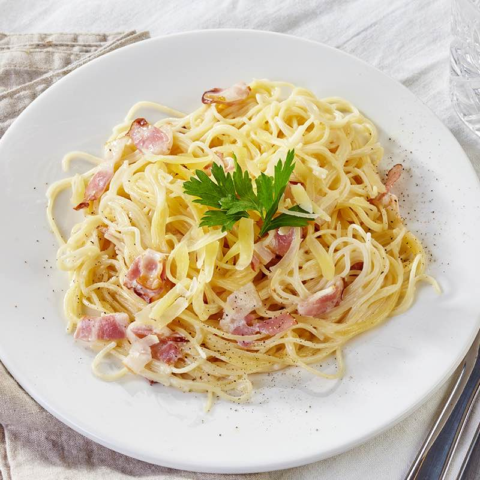

Spaghetti alla Carbonara Recipe

Description
Spaghetti alla Carbonara is an Italian dish made with eggs, hard cheese, and cured pork.
Its signature rich and silky sauce comes from beaten eggs tossed with hot pasta.
Ingredients
- Spaghetti
- Eggs
- Cheese
- Guanciale
- Seasonings
- Oil
Steps
- Cook the pork in olive oil until browned and crispy, then drain on paper towels.
- Boil the spaghetti in salted water. Drain and return to the pot. Let cool.
- Whisk the eggs, 1/2 of the cheese, and some pepper in a bowl until smooth.
- Pour the egg mixture over the pasta, stirring quickly, until creamy.
- Stir in the pork, then top with the remaining cheese and more black pepper.